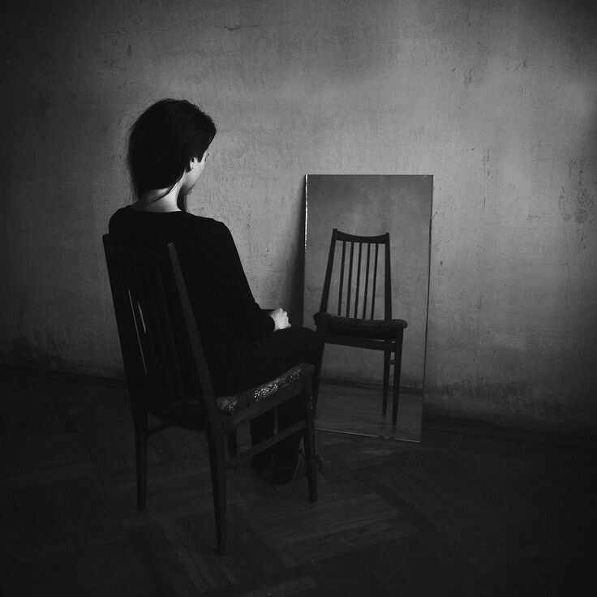

Entretanto, foi justamente quando você começou a adentrar a adolescência que meu corpo começou a colapsar. Tudo em mim atingiu um limite, físico, emocional e mental. Aos 14 anos, você estava florescendo para uma nova fase da vida. Eu, aos 42, estava desmoronando silenciosamente.
O cansaço já não era mais só uma sensação: era um estado permanente.
Minha cabeça parecia carregada de um peso que não me pertencia, mas que eu tinha aceitado carregar por tempo demais. Meu corpo estava saturado, e o ar que respirava parecia tóxico. As dores começaram a tomar conta de tudo.
Eu não suportava mais ser o alvo do sadismo do seu pai.
Não suportava mais ser tratada como coisa, como instrumento, como saco de pancadas.
Não suportava mais existir do jeito que eu existia.
Eu estava exausta.
Comecei a desenvolver um hábito peculiar, talvez até perturbador, de passar longos minutos diante do espelho, todas as manhãs. Me encarava como quem tenta decifrar um enigma insolúvel. Eram minutos que pareciam horas. Um vazio desconfortável se instalava no reflexo. E, ali, sozinha, em silêncio, eu me perguntava todos os dias:
“O que vai ser de mim hoje?”
“Será que eu aguento mais um dia?”
“Até quando?”
Mas, acima de tudo, havia uma pergunta que ecoava, inevitavelmente, todas as vezes:
“Quem é você?”
Era como se o espelho estivesse zombando de mim, refletindo uma mulher que eu já não reconhecia. Eu sabia meu nome, minha história, minhas cicatrizes, mas não sabia mais quem eu era de verdade. Aquela ali não podia ser eu. Não podia ser Mazzi Ferland, a mulher que, apesar de tudo, sempre deu um jeito de sobreviver.
Eu olhava para aquela imagem sem identidade e me perguntava se eu ainda era digna de carregar o nome que os meus pais me deram. Se eu era digna de ser chamada de mãe.
A resposta que ecoava lá no fundo do meu silêncio era dura:
“Não.”
Naquele momento, eu me sentia fraca.
Mazzi Ferland foi fraca.
Sua mãe foi fraca, Miska.
Fraca como mulher. Fraca como mãe. Fraca como ser humano.
E foi dentro desse estado de ruína, em meio ao colapso, à impotência e à vergonha, que eu tomei uma decisão.
Uma que eu não sabia se viria tarde demais ou no momento exato, mas que, para mim, se impôs como inevitável:
“Chega.”
Era uma terça-feira, exatamente 15h43. O relógio na parede parecia congelado no tempo, mas meu coração batia acelerado, lembrando-me de que cada segundo era precioso e ao mesmo tempo perigoso.
Seu pai não estava em casa. Tinha começado a sair com mais frequência, sem avisar, sem explicar, e, sinceramente, sem deixar saudades. Eu não fazia ideia do motivo, talvez estivesse se enfiando em algum bar sujo, afogando a própria existência em álcool, ou, quem sabe, gastando o pouco de humanidade que restava nele com outra mulher qualquer. No fundo, não me importava mais. Não importava se ele voltaria com o bafo de cerveja ou com batom barato na camisa, aquilo já não me atravessava.
Naquele momento, minha mente só girava em torno de um objetivo: partir.
Juntei o essencial numa mala pequena, mas pesada de significados. Roupas, documentos, um pouco de dinheiro escondido com cuidado ao longo dos anos e a coragem que eu ainda conseguia resgatar entre os cacos. Você estava no seu quarto, concentrada no celular que eu te dei meses antes, quase como um presente de resistência. Um pequeno refúgio, um jeito de criar um mundo só seu longe da desgraça que era o nosso.
A mala estava pronta. Meu coração, quase.
Faltava só uma coisa: a porta.
Aquela porta, que sempre foi um limite simbólico entre o inferno e a possibilidade de liberdade, agora estava ali na minha frente, a poucos passos de se tornar real. Estendi a mão até a maçaneta. Respirei fundo. O ar que entrou nos meus pulmões era trêmulo e doído. Eu sabia que sair significava abandonar uma vida para sobreviver. Porém, essa era a única escolha possível.
Mas então, antes que eu pudesse virar a maçaneta, sua voz me alcançou.
— Mãe..
Ainda doce, como sempre foi. Ainda minha favorita no mundo, mesmo agora com o tom levemente transformado pela adolescência. Uma voz que cresceu sem perder sua ternura.
A sua voz, Miska, sempre foi minha voz favorita.
Me virei devagar. Você estava ali, de pé no corredor. Já não era mais uma criança pequena, e isso doía de um jeito novo em mim. Tinha traços que me lembravam a mim mesma, mas os seus olhos eram só seus: firmes, cansados, mas ainda brilhantes em pequenos momentos como aquele.
Você se aproximou com algo escondido atrás das costas. Franzi o cenho, surpresa, tentando adivinhar o que era. E então, quando chegou bem perto de mim, revelou.
Um boletim escolar.
— Eu fui a aluna destaque da turma. — Você disse com um sorriso tímido, mas carregado de orgulho.
Aquele sorriso…
Aquele sorriso era você em essência.
Era tão lindo, tão autêntico, tão seu. Um raio de luz no meio do caos.
Examinei o boletim com atenção, linha por linha, tentando processar se aquilo poderia ser real. Você havia tirado 10 em absolutamente todas as matérias. Não uma média ajustada, não um esforço empurrado pra cima, era excelência plena, incontestável. Nenhuma nota abaixo da perfeição.
Aquilo me atravessou como um raio quente num corpo frio. Meu coração, endurecido pelo desgaste, pela rotina da dor, pelo esgotamento de anos, pareceu bater diferente. Aquela folha de papel, com números cuidadosamente alinhados, era mais do que um documento escolar. Era um lembrete: você ainda estava ali. Você ainda sonhava. E, de algum modo, ainda brilhava.
Sorri, um sorriso cheio de amor e desespero, e te abracei forte, tentando guardar cada segundo daquele momento como quem sabe que está prestes a perder o que mais ama. Segurei o choro com todas as forças, porque eu não queria que você visse. Eu não queria que você desconfiasse. Eu não queria que você sentisse, nem por um segundo, que aquele seria o último abraço.
— Parabéns, minha filha. De verdade. Continue assim, porque você vai longe... assim como sua mãe um dia foi. — murmurei, tentando manter a voz firme. — A mamãe agora precisa sair… comprar algumas coisas, tá bom?
Você assentiu, tranquila. Mas aí, como se quisesse me prender ali por mais um instante, você perguntou com aquela leveza que só você sabia ter:
— Tá… você vai querer escutar umas músicas comigo quando voltar, mãe? Por favor..
Por um instante, eu congelei. Minhas mãos suaram, minha mente girou. Todas as camadas da minha decisão, a coragem, o desespero, a certeza, o medo, pareciam gritar simultaneamente dentro de mim. Uma pergunta silenciosa ecoava: Você tem mesmo certeza disso?
A verdade é que não. Ninguém nunca tem certeza ao fugir de si mesma.
— … Mãe?
Sua voz me trouxe de volta. Eu pisquei devagar, traguei o nó na garganta e me curvei num sorriso. Aquele sorriso que toda mãe aprende a forjar para proteger os filhos da dor — mesmo quando a dor já virou casa por dentro.
— Sim, meu amor. Quando eu voltar, a gente vai ouvir muitas músicas lindas juntas, tá bom? — falei com a maior ternura que consegui reunir. — Agora vai pro seu quarto e me espera voltar, tá?
Acenei levemente, com a alma despedaçando por dentro, mas tentando manter a imagem intacta.
Você obedeceu. Simplesmente virou-se e caminhou em direção ao seu quarto, tranquila, sem saber que aquele gesto tão pequeno seria a última imagem que eu teria de você naquele lar, se é que ainda podíamos chamar aquele lugar de lar. E foi justamente por isso que você não viu minhas lágrimas começarem a escorrer silenciosamente pelo meu rosto.
Eram lágrimas pesadas. Daquelas que não vêm de um momento, mas de uma vida inteira sendo acumuladas. Cada gota carregava o peso da decisão que eu estava prestes a tomar. Carregava anos de medo, de resistência, de fracassos e, acima de tudo, de amor próprio.
Abri a porta com as mãos trêmulas. A luz do fim da tarde tocou meu rosto, trazendo a sensação de que o mundo lá fora me esperava há séculos. Respirei fundo. E, pela primeira vez em muitos anos, senti um ar que não parecia contaminado pela dor.
Então eu sussurrei, com a voz partida:
— Me desculpa, Miska.
E fui embora.
Sem cerimônia, sem volta, sem coragem de olhar para trás. Comecei a caminhar para longe, para bem longe. Olhava constantemente em volta, temendo que seu pai aparecesse de repente, furioso, destruidor, como sempre foi. Mas, por sorte ou ironia do destino, ele não apareceu. E aquilo já era o primeiro milagre.
Sumir, honestamente, foi mais fácil do que eu imaginava. Ninguém sabia dos meus planos. Nem você. Nem ele. Era como se eu tivesse desaparecido dentro do anonimato que a dor construiu pra mim. Uma mulher quebrada somando-se a uma multidão qualquer.
Mas, filha, por favor… não pense nem por um segundo que essa decisão foi fácil.
A viagem inteira eu chorei. Pensei em você em cada esquina, em cada poste que passava pela janela do ônibus, em cada silêncio entre uma parada e outra. Quando cheguei na nova cidade, outro estado, outra realidade, outra chance, o ar era novo, sim. Mas o vazio viajou comigo.
E foi aí que veio a culpa. A culpa que me assombra até hoje.
Eu poderia ter te levado comigo. Eu deveria ter te contado tudo antes. Ter te abraçado com verdade, ter explicado que a dor que morava naquela casa não era sua culpa. E que a fuga era nossa, não só minha.
Mas eu não fiz nada disso.
Foi uma atitude egoísta.
Mesmo tendo passado anos pensando em você, sonhando com um futuro melhor pra nós duas… quando finalmente tive a chance de agir por você, de verdade, eu não pensei. Não o suficiente. Fugi sozinha.
Hoje, tenho 45 anos.
Na lógica do tempo, você já deveria ter 17. Uma quase mulher.
E a verdade, Miska, é que você nunca saiu da minha cabeça. Nunca. Nenhum dia sequer passou sem que seu nome me atravessasse o pensamento como um sussurro, uma lembrança, uma ferida. Sempre me pergunto como você está. Sempre. Se está bem. Se está segura. Se ainda está viva.
A mente não perdoa. A minha, pelo menos, não.
Eu sei. Eu sei que você pode me odiar. Eu sei que, na balança do que é certo, eu falhei com você no momento em que mais precisava de mim. E não estou aqui tentando justificar isso. Não há justificativa que diminua o impacto de uma ausência como a minha.
Eu sei, Miska, eu fui uma mãe horrível.
Não porque não te amava, Deus sabe o quanto te amei e ainda amo, mas porque deixei que o desespero fosse maior do que a responsabilidade. Eu me salvei e, no processo, te abandonei. E é essa escolha que me corrói até hoje.
Guardo seu boletim até agora. Aquele do primeiro semestre do seu nono ano. Notas impecáveis, todas dez. Um sorriso orgulhoso no rosto. Uma vitória sua em meio ao caos. E eu, ali, sorrindo também… mesmo já decidida a desaparecer.
Aquele papel virou um relicário. É a única coisa palpável que ainda tenho de você. Mas é também uma lâmina, porque junto da lembrança, ele carrega a dor, o remorso, o egoísmo. Ele grita o que eu perdi. O que deixei para trás. O que talvez nunca mais volte.
Talvez você tenha me esquecido.
Talvez seja melhor assim.
Mas mesmo assim… mesmo nesse silêncio de tantos anos, nesse vazio que virou rotina, eu só queria dizer, mais uma vez, e com todo o peso que isso carrega:
Eu sinto muito.
← Retornar Sair →